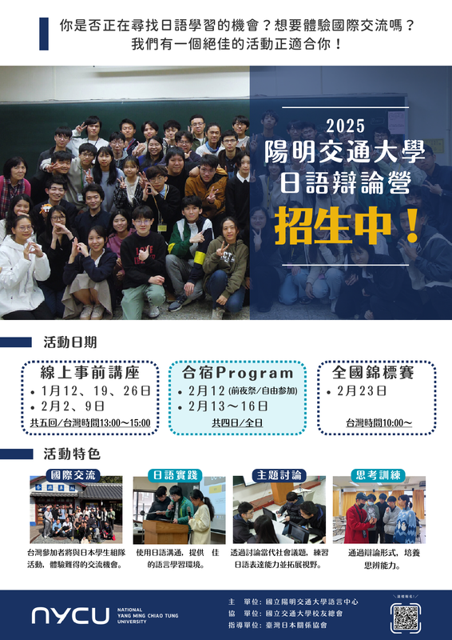
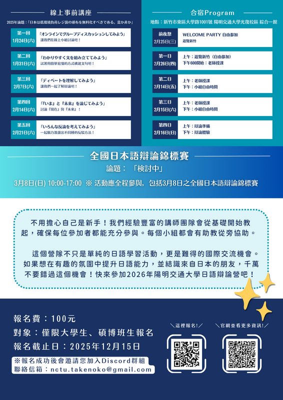

<section class="section" style="border-bottom:none;">
	<div class="container">
		<div class="section-head">
			<span class="eyebrow">2025</span>
			<h2>日語辯論營暨全國日本語辯論錦標賽</h2>
			<p>日本語ディベートで国際交流</p>
		</div>

		<h3 class="block-title">獲勝隊伍</h3>
		<table class="data-table">
			<thead><tr><th>獎項</th><th>得獎者</th></tr></thead>
			<tbody>
				<tr><td>冠軍｜Ａチーム</td><td>陳品齊（陽明交通大學 電機工程學系）<br>蔡佩憫（陽明交通大學 人文社會學系）<br>蕭宇翔（陽明交通大學 資訊工程學系）<br>李之儀（東吳大學 日本語文學系）<br>詹薪翰（東吳大學 日本語文學系）</td></tr>
				<tr><td>亞軍｜Ｅチーム</td><td>王紹倫（陽明交通大學 醫學系）<br>方宣懿（陽明交通大學 機械工程學系）<br>葉良智（東吳大學 日本語文學系）<br>涂智捷（東吳大學 日本語文學系）</td></tr>
				<tr><td>最佳辯士獎</td><td>王紹倫（陽明交通大學 醫學系）</td></tr>
				<tr><td>辯士獎</td><td>魏子翔（陽明交通大學 電子研究所）<br>詹薪翰（東吳大學 日本語文學系）<br>方宣懿（陽明交通大學 機械工程學系）<br>高子涵（東吳大學 日本語文學系）<br>陳宣穎（東吳大學 日本語文學系）</td></tr>
			</tbody>
		</table>

		<div class="page-prose">
			<h3>活動目的</h3>
			<p>語言能力在職場上非常重要，具備良好的語言能力可以更輕鬆的征戰職場。本次活動旨在增進參加者的日語能力以及用日語思考的能力，並且藉由辯論提高參加者的邏輯思考，資料查找能力。另外，透過日語辯論，傾聽能力、統整能力、口頭發表能力、以及提升說話的說服力等等能力都將獲得巨大的提升。並且可以讓日本人以及台灣人進行文化交流，學習不同的文化。</p>
			<p><strong>以「辯論」形式練習日文</strong>——不知道如何下手練習口說、寫作嗎？辯論就是最佳的形式！</p>
			<ul>
				<li>說不出來、詞不達意？辯論使用半成稿、有一定格式可遵循，能幫助你有效率的系統練習</li>
				<li>不知道要說什麼/找不到人練習：提供題材與對手</li>
				<li>除了主講師外，每組會安排助教，不用怕跟不上！</li>
			</ul>
			<p><strong>與日本人組隊交流、拓展國際觀</strong>——本活動同時在日方舉辦，除了有經驗豐富的日籍老師外，更有許多日本學員！分組採混編方式，一起來跟日本人盡情聊天吧！</p>
			<p>報名人數上限：<span class="text-accent">40 人</span></p>
		</div>

		<h3 class="block-title">活動時程</h3>
		<table class="data-table">
			<thead><tr><th>日期</th><th>內容</th></tr></thead>
			<tbody>
				<tr><td colspan="2" style="background:var(--color-bg-alt);font-weight:600;">線上事前講座　共五回（台灣時間 13:00～15:00）</td></tr>
				<tr><td>2025/1/12（日）</td><td>線上 Program（1）</td></tr>
				<tr><td>2025/1/19（日）</td><td>線上 Program（2）</td></tr>
				<tr><td>2025/1/26（日）</td><td>線上 Program（3）</td></tr>
				<tr><td>2025/2/2（日）</td><td>線上 Program（4）</td></tr>
				<tr><td>2025/2/9（日）</td><td>線上 Program（5）</td></tr>
				<tr><td colspan="2" style="background:var(--color-bg-alt);font-weight:600;">實體合宿 Program（新竹市東區大學路 1001 號　陽明交通大學光復校區　綜合一館）</td></tr>
				<tr><td>2025/2/12（三）</td><td>前夜祭（welcome party）</td></tr>
				<tr><td>2025/2/13（四）</td><td>上午：日語辯論教學／下午：自由活動時間</td></tr>
				<tr><td>2025/2/14（五）</td><td>上午：日語辯論教學／下午：自由活動時間</td></tr>
				<tr><td>2025/2/15（六）</td><td>上午：日語辯論教學／下午：自由活動時間</td></tr>
				<tr><td>2025/2/16（日）</td><td>辯論體驗</td></tr>
			</tbody>
		</table>

		<h3 class="block-title">辯論流程</h3>
		<div class="flow-grid">
			<div class="transport-card">
				<h4>第一パート</h4>
				<dl class="detail-list">
					<dt>肯定側立論</dt><dd>4 分鐘</dd>
					<dt>準備</dt><dd>5 分鐘</dd>
					<dt>否定側質疑</dt><dd>3 分鐘</dd>
					<dt>準備</dt><dd>2 分鐘</dd>
					<dt>否定側反駁</dt><dd>2 分鐘</dd>
					<dt>準備</dt><dd>2 分鐘</dd>
					<dt>肯定側再反駁</dt><dd>2 分鐘</dd>
				</dl>
			</div>
			<div class="transport-card">
				<h4>第二パート</h4>
				<dl class="detail-list">
					<dt>否定側立論</dt><dd>4 分鐘</dd>
					<dt>準備</dt><dd>5 分鐘</dd>
					<dt>肯定側質疑</dt><dd>3 分鐘</dd>
					<dt>準備</dt><dd>2 分鐘</dd>
					<dt>肯定側反駁</dt><dd>2 分鐘</dd>
					<dt>準備</dt><dd>2 分鐘</dd>
					<dt>否定側再反駁</dt><dd>2 分鐘</dd>
				</dl>
			</div>
			<div class="transport-card">
				<h4>第三パート</h4>
				<dl class="detail-list">
					<dt>準備</dt><dd>5 分鐘</dd>
					<dt>否定側総括</dt><dd>3 分鐘</dd>
					<dt>肯定側総括</dt><dd>3 分鐘</dd>
				</dl>
			</div>
		</div>
		<div class="page-prose">
			<p style="text-align:center;color:var(--color-muted);">總計：51 分鐘</p>
		</div>

		<h3 class="block-title">常見問題</h3>
		<div class="faq-list">
			<div class="faq-group">
				<details class="faq-item"><summary>ディベート経験がないので、ついていけるか心配です。</summary><p class="faq-a">初心者向けのプログラムです。グループごとに経験者やTAを配置しますので、心配ありません！</p></details>
				<details class="faq-item"><summary>高校生ですが参加できますか。</summary><p class="faq-a">基本的に大学生を対象としていますが、過去には参加を認められた場合もありますので、まずは、お問い合わせください。</p></details>
				<details class="faq-item"><summary>日本人ではありませんが参加できますか。</summary><p class="faq-a">もちろん、日本語でのプログラムに参加できるなら、大歓迎です。</p></details>
				<details class="faq-item"><summary>中国語が話せませんが、現地の滞在に不安があります。</summary><p class="faq-a">日本語のプログラムですので、心配しないでください。英語でのコミュニケーションもできます。</p></details>
				<details class="faq-item"><summary>深く国際交流したいのですが。</summary><p class="faq-a">台湾側の交流チームと企画、運営をする人を募集しています。興味ある方はお問い合わせください。</p></details>
				<details class="faq-item"><summary>参加費の支払い方法は何ですか？</summary><p class="faq-a">銀行口座への振り込みか、linepayです。合宿プログラム参加の方は現地払いもできます。お申し込みフォームに記入いただいた方に順次、振り込み先のご案内をいたします。</p></details>
				<details class="faq-item"><summary>台湾合宿に参加するメリットはなんですか？</summary><p class="faq-a">交流のための自由時間を設けており、現地の学生たちと観光やグルメ、買い物も楽しめます。台湾の文化を実際に体験することで、深く異文化交流を体験できます。プログラム中は、台湾の有名校・陽明交通大学の生活を体験できます。隣接している科学園区（台湾のシリコンバレー）にはTSMC本社があり、見学することもできます。また、現地の学生たちと観光ツアーも計画しています。</p></details>
				<details class="faq-item"><summary>合宿の集合場所はどこですか？</summary><p class="faq-a">現地集合、現地解散のプログラムです。台湾・陽明交通大学での現地集合になります。交通費等は自分で手配してください。空港から陽明交通大学までの移動は空港リムジンバスが便利です。</p></details>
				<details class="faq-item"><summary>合宿中の食事について教えてください。</summary><p class="faq-a">校内、学校の付近に食事するところがあります。是非、現地の食文化を体験してください。現地の学生たちの平均は一食100元ほどです。</p></details>
			</div>
		</div>

		<h3 class="block-title">活動海報</h3>
		<div class="gallery poster-grid">
			<a class="gallery-item" href="assets/img/uploads/1_orig.png"></a>
			<a class="gallery-item" href="assets/img/uploads/2_orig.png"></a>
		</div>

		<h3 class="block-title">イベントチラシ</h3>
		<div class="gallery poster-grid">
			<a class="gallery-item" href="assets/img/uploads/1_orig.jpg"></a>
			<a class="gallery-item" href="assets/img/uploads/2_orig.jpg"></a>
		</div>

		<div class="page-prose" style="margin-top:48px;padding-top:32px;border-top:1px solid var(--color-line);">
			<h3>協辦單位</h3>
			<p>臺灣交通大學校友總會</p>

			<h3>指導單位</h3>
			<p>外交部</p>
		</div>
	</div>
</section>
